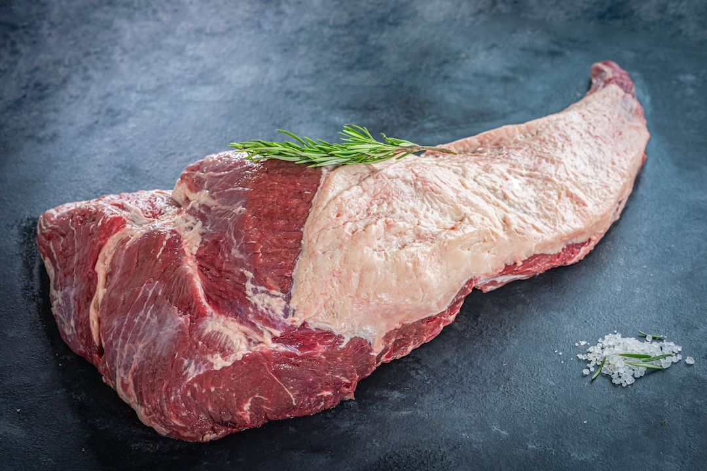

Mapa CarneCerta
Sabor intenso e ótima resposta no fogo
A fraldinha é um corte muito valorizado por seu sabor e pela versatilidade em churrasco e assados.

Ideal para • churrasco • assado • panela
Maciez
3/5
Boa com controle
Gordura
3/5
Equilibrada
Sabor
4/5
Intenso
Abrir recomendador inteligente
Fraldinha
Corte tradicional, com boa presença e muito sabor quando preparado corretamente.
A fraldinha é uma excelente opção para quem busca um corte com personalidade, ótimo rendimento e resposta saborosa no fogo ou na panela.
Churrasco
Assado
Panela
4.6
Corte de churrasqueira
Muito apreciada para quem busca sabor marcado, boa presença e ampla versatilidade no preparo.
Ideal para
Dica do açougueiro IA
Corte em tiras grossas ou deixe inteira para assar com mais controle e melhor resultado final.